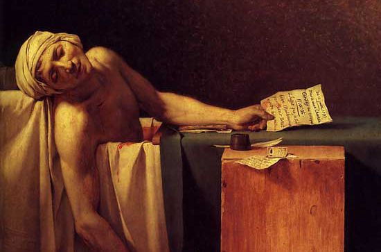

油画派系
巴洛克艺术
精华：色彩明快，夸大光影，追求不规则形式，起伏的线条以及强烈热闹的情感表现。
弱点：巴洛克艺术涉及绘画、建筑、音乐、文学、服装、家具等等，是是一种伟大的艺术形式，暂无弱点可击。
巴洛克（Baroque)一词原指不规则的，怪异的珍珠，产生于16世纪下半期，盛行于17世纪。巴洛克在当时具有贬义，当时人们以为它的华丽、夸耀的风格是对文艺中兴风格的贬低，古典主义者以为巴洛克是一种堕落瓦解的艺术，只是到了后来，才对巴洛克艺术有了一个较为公正的评价。现在，人们已经公认，巴洛克是欧洲一种伟大的艺术风格。 巴洛克画家的典型代表是比利时的鲁本斯、荷兰的伦勃朗、西班牙的委拉斯开兹、英国的凡·戴克等。他们的画作人体动势生动大胆勇敢，色彩明快，夸大光影变化，比文艺中兴时代画家还要更夸大人辞意识。 鲁本斯的宗教画人体姿势动作激烈，色彩光鲜；伦勃朗的画作犹如在舞台上，人物面部处于高光部位，与附近的暗影有强烈的对比；委拉斯开兹的“宫女”，背景中在窗外射入光线下工作的织女，曾经对后期浪漫主义画派画家产生很大的启示。
代表作品
鲁本斯巴洛克艺术作品《三 美神》
伦勃朗巴洛克艺术作品《自画像》
